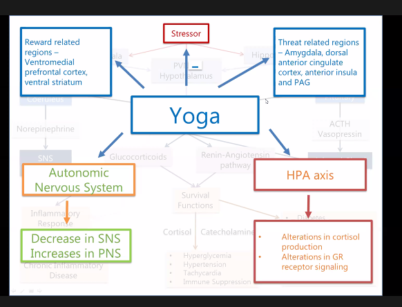
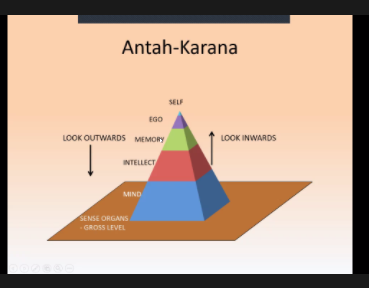
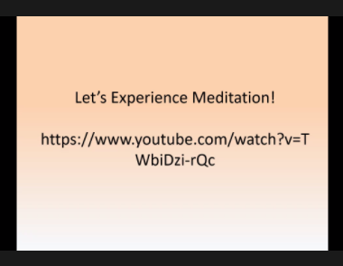

nationalWebinarStressHCW
National Webinar Stress Management in Health Care Workers, 21/06/21 #
Summary of sessions 4 to 10 - Dr. Jagdish Varma, Professor of Psychiatry, Pramukhswami Medical College, Karamsad
CONTENTS
- National Webinar Stress Management in Health Care Workers, 21/06/21
- Stress in HCW during COVID
- Neurophysiology of Stress
- Stress Mx an Art of Mind Body Medicine
- Stress Mx Art of Sleep; Role of Yoga-Nidra
- Stress Mx: Role of Meditation and relaxation techniques
- Role of Suryanamaskar / Sun-salutation
- Stress Management by Mahayogam
Stress in HCW during COVID #
Dr. Vikas Menon, Addl Prof of Psychiatry, JIPMER 21/06/21
- Definition, Seyle (non-specific response), Lazarus (demands more than resources)
- Sources of stress (workload, outside comfort zone, fear of contagion, stigma and discrimination, other life responsibilities)
- Manifestation (physical, cognitive, emotional, Recognize warning signs)
- Screening (GHQ12, K10, PHQ9, simple self report measures)
- Things to remember (Stress is normal, natural response; Yerkes-Dodson curve - good stress, bad stress; Thoughts influence our Behaviors and Emotions and vice versa; Do not neglect warning sings - work on behaviors to influence thoughts and emotions)
Neurophysiology of Stress #
Dr. Kaviraja Udupa, Addl Prof, Neurophysiology, NIMHANS
- Good stress and Bad stress; performance decreased if stress in the strain range
- Stress patho (Kurk 2019, Steptoe 2012 Nature reviews)
- Stress and ANS (Limbic system, Prefrontal modulates; balance between these 2 systems is important; Cresswell 2014, Balsevich 2019 Neurobiology of stress, McEwevn 2007, McEwen - Stress, adaptation and disease, Slavich and Irwin 2014, Irwin and Cole 2011, Godoy 2018, Nuria Stress and Anxiety, Streeter 2012, Slavich and Cole 2013, Foster - stress and gut, Martin 2018, Sethuraman 2019)
- Bottom up and Top Down modulation
- Yoga = Top Down modulation
- 2 limbs of ANS - anti-correlated in terms of regulation = balance is required
 How yoga can modulate stress
Stress Mx an Art of Mind Body Medicine #
Dr. R Yadav, Prof, Physiology, AIIMS, New Delhi
- Stress - immunity - inflammation
- Bijlani Complementary Med 2005 (Effect of Yoga on FPG)
- Anti-stress hormones / NTs (5HT, Dopa, Oxy, Cortisol, Endorphin, BDNF)
- Yadav 2012 Complementary Med increased cortisol after Yoga intervention
- Yoga and brain plasticity (18-FDG-PET study of yoga intervention, 5 yrs of yoga; Magan 2019 Complimentary Medicine)
- Magan 2020 Med Hypothesis (Neural mech of meditation)
Stress Mx Art of Sleep; Role of Yoga-Nidra #
Dr. Bhalendu Vaishnav, Prof of Medicine, PSMC, Karamsad
- Yoga is a science and process to achieve greater spiritual consciousness
- From Phenomenal (subject to the senses; can have limitations) to real man (inner being which is real; limitless)
- Yoga is a way to science and process to link the phenomenal to the real
- YN / Yogic sleep
- PME relaxation, while maintaining wakeful awareness
- Part of Prathyhara - Tortoise analogy
- Sense withdrawal + Inner Awareness
- 8 Stages
- Stage 1: Internalization - systematic disengagement from external
- Stage 2: Sankalpa - resolve to guide life’s purpose
- Stage 3: Rotation of consciousness - keep your attention rotating to various parts of the body
- Stage 4: Breath awareness - deepening of the detached state
- Stage 5: Sensation of opposites - sense opposites feelings and emotions in a detached state
- Stage 6: Visualization
- Stage 7: Repetition of sankalpa
- Stage 8: Externalization
- Relaxation response has to be trained
Stress Mx: Role of Meditation and relaxation techniques #
Dr. Balaji Bhardwaj, Addl Prof, Psychiatry, JIPMER
-
Struggle in the mind
- Mind sticks on negativity
- Effort is the language of the body
- Effortlessness in the language of the mind : RED MONKEY experiment; Same as the Purple cow that I use with students here
-
West v/s East
- West: positive psychology; curing the abnormal
- East: Manage emotions by pranayama; antankarna; calming the perturbation; In meditation we “look inwards”

- 5 functions of mind as per Patanjali
- Logical mind
- Misinterpretation
- False thinking
- Sleep
- Memory
-
Meditation = Aware of the functions of the mind without participating in them; Window analogy - we just observe people walking by without thinking that I didn’t want to see an old person;
-
3 attitudes for meditations
- I want nothing
- I will do nothing
- I am nothing
-
Practicing meditation = Music in the lobby analogy - without effort

Role of Suryanamaskar / Sun-salutation #
Dr. Mrunal Phatak, Dean, Professor & Head, Department of Physiology, AIIMS, Nagpur
- Physical wellbeing - without breath
- Mind wellbeing - Use breath along with Suryanamaskar
- Spiritual wellbeing - with bija chanting
- Technique
- Variations
- Light version 2.9 METS
- Exhaustive 7 METS
- Benefits - Lungs are more full, increased O2 supply; Increased cardiac circulation; Increased brain circulation; May be weight loss if done as an aerobic exercise
- Sun salutation - improves muscle strength, power and endurance
- Increased FDG uptake in shoulders and anterior abdomen after 15 rounds of Suryanamaskar
- Fast vs Slow
- Fast = 1 cycle done in 2 minutes
- Slow = 1 cycle done in 6 minutes with each pose done for 30 seconds = relaxing benefit
- Effect on stress = SN when done with breathing and seed mantra chanting stimulates PNS and lead to relaxation response
Stress Management by Mahayogam #
Dr. C. Thirupathi, Director, Professor & Head, Department of Physiology, Madras Medical College, Chennai
- Energy flow should be in constant balance in body
- When obstructions arise in its path stress crops up
- Stress can be classified into
- Physical
- Mental
- Chemical
- Mahayogam modifies lifestyle
- Various chakras and hormones